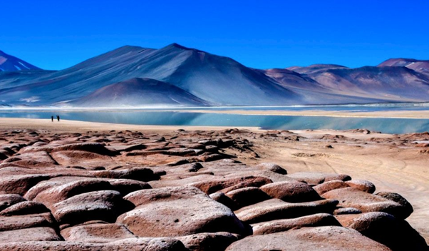

As Lagunas Altiplanicas são um conjunto de lagoas localizadas nas altas altitudes dos Andes, na região de Atacama. Essas lagoas são conhecidas por sua beleza natural e por suas águas cristalinas de cores vibrantes, que variam entre azul e verde. Essas lagoas ficam a mais 4200 metros de altitude, onde é possível ver muitas passagens bonitas.
